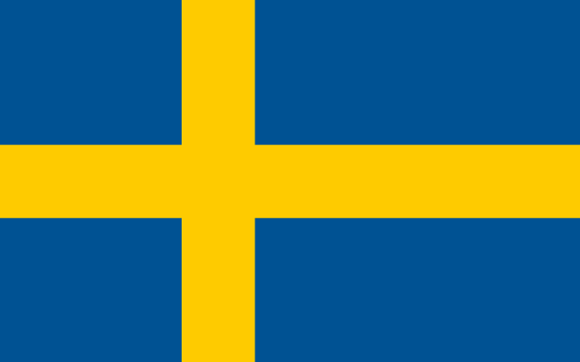

瑞典 (Sweden)介紹

首都 Capital
斯德哥爾摩。
語言 Language
瑞典語、英語。
時差 jet lag
夏天時間（3月底至10月底）較台灣慢6小時；冬天（10月底至3月底）較台灣慢7小時。
貨幣 Currency
瑞典克朗（SEK）。
電壓 Voltage
220V，插座為雙孔圓柱體。
歷史 History
西元1523年瑞典貴族領導人民反抗丹麥而獨立；西元十九世紀初將芬蘭屬地割讓給俄國，卻獲得挪威的控制權；西元1905年挪威脫離瑞典獨立；第二次世界大戰中，瑞典都保持中立而未受破壞，是社會福利制度非常完善的國家。
國土特性 Territorial characteristics
瑞典的地形相當多樣，主要是冰河時期的冰蝕湖，加上斷層的作用，海水入侵後變成今日湖泊處處的美麗景緻。
氣候 Climate
南北溫差大，愈往北部愈乾燥寒冷；每年12~5月為冬季，平均溫度在2℃~15℃之間，6~8月為夏季，溫度一般在25℃以上，6、7月有永晝發生，9、10月為秋季，平均氣溫在5℃~18℃之間。
文化 Culture
仲夏節，每年六月底慶祝的仲夏節之夜是瑞典最美好的時光。這時候，瑞典北方太陽晝夜不落，而在南方也只有短短幾個小時的黑夜。過仲夏節是古老的傳統，其源原可追溯到史前的夏至慶祝活動。每年的12月13日是瑞典傳統的「聖露西亞節」，瑞典人也稱這個節日為「光明節」。這天是瑞典一年中黑夜最長的日子，但從此以後，漫漫長夜便日見縮短，而光明的白晝則一天長似一天。當地社區或學校選舉的「聖露西婭小姐」頭頂蠟燭，領著一隊手捧蠟燭的少男少女，到當地的政府部門巡迴演唱「聖露西亞節」歌曲，祈盼光明的到來。